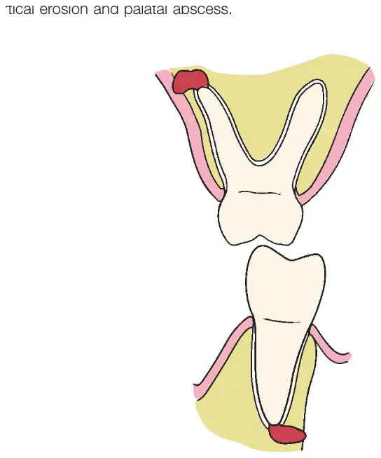
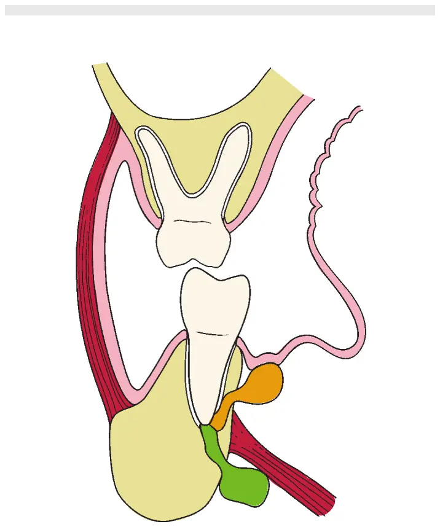

نسخه استخراجشده؛ ترجمه یا تأیید علمی انجام نشده است. وضعیت: captured
عفونتهای اودنتوژنیک میتوانند از روتین و موضعی تا شدید و تهدیدکنندهی حیات باشند.

و اولین هدف درمانگر روشن است: تعیین شدت، و مداخله بر همان اساس. این اجازه میدهد عفونت کنترل شود و از پیشرفت به فضاهای بافتی بالقوهی عمیقتر جلوگیری شود.
و تعیین شدت، یک ترتیب مشخص دارد: شرححال کامل، سپس معاینهی فیزیکی، و سپس هر آزمون کمکی لازم — مانند مطالعات تصویربرداری و آزمایشگاهی.
و چهار پرسش رایج در شرححال بیماری فعلی:
هر یک از این چهار پرسش، یک اطلاعات مشخص میدهد — و درس بعدی همین است.
علائم اولیه ← منشأ عفونت. اگر بیمار سابقهی درد دندانی مزمن در ناحیهی شکایت اصلی داشته، نکروز یا بیماری پریودنتال شدید همان دندان میتواند علت مشکوک باشد — و همین به تو اجازه میدهد در معاینه روی همان ناحیه تمرکز کنی.

تغییر ماهیت و محل درد ← پیشرفت عفونت. یک مثال دقیق: اگر درد از یک مولر مندیبل به درد فک و گردن تغییر کرده باشد، درمانگر باید سوءظن بالایی به گسترش به فضاهای عمیقتر داشته باشد.
مدت علائم ← تهاجمی بودن عفونت — و اینجا یک عدد کلیدی هست:
و سابقهی درمان پیشین ← سرنخ مهمی دربارهی تهاجمی بودن. اگر بیمار با عفونت مراجعه کند در حالی که علت عفونت برداشته شده و/یا عفونت تخلیه شده بوده، این میتواند نشاندهندهی عفونتی تهاجمی باشد که نیازمند مدیریت تهاجمیتر است.
پس از شرححال دقیق، نوبت شرححال پزشکی گذشته و شرححال اجتماعی است.
و یک هشدار دربارهی فرمهای پرسشنامهای: هنگام استفاده از فرم شرححال سلامت، ضروری است که درمانگر نهتنها پاسخهای بیمار را مرور کند، بلکه آن پاسخها را با بیمار یا مراقبش بیشتر بحث کند تا از دست رفتن موارد مهم یا سوءتفاهم پیش نیاید.
و اگر بیمار راوی خوبی نیست: اغلب لازم است با پزشک مراقبت اولیه یا متخصص بیمار تماس گرفته شود تا شرححال پزشکی کامل از راه مشاورهی پزشکی به دست آید.
گام بعدی، مرور کامل سیستمهاست — و این مرحلهای است که در آن علائم بیشتری بیرون کشیده میشود: نهتنها علائم حفرهی دهان و سر و گردن، بلکه علائم کل بدن — مانند علائم عمومی، درد قفسهی سینه، تنگی نفس، پُرادراری، پُرنوشی و پُرخوری.
و این مرحله دو دلیل حیاتی دارد:
و توجه کن به آن سه علامتِ پُرادراری و پُرنوشی و پُرخوری در این فهرست — این سه، تصویر کلاسیک دیابت تشخیصدادهنشدهاند. یعنی مرور سیستمها، ابزار تو برای پیدا کردن همان چیزی است که بیمار خودش نمیداند دارد.